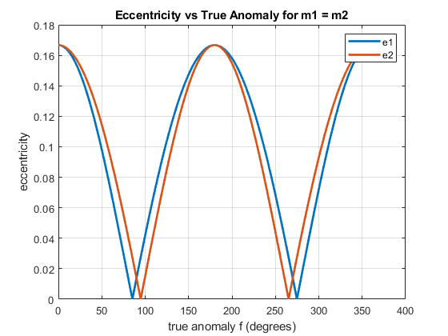
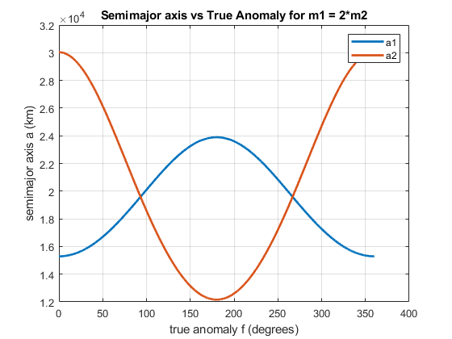
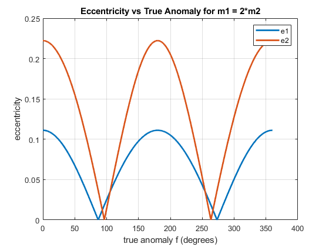

Contents
clc; clear; close all;
MU = 3.986 * (10^5);
R_E = 6371;
f = 0:0.1:360;
V0 = sqrt(MU / (3*R_E));
Caclculations where m1 = m2
r1 = sqrt((3*R_E*cosd(f)-(0.5*R_E)).^2 + (3*R_E*sind(f)).^2);
r2 = sqrt((3*R_E*cosd(f)+(0.5*R_E)).^2 + (3*R_E*sind(f)).^2);
a1 = -0.5*MU*((0.5*(V0^2)) - (MU./r1)).^(-1);
a2 = -0.5*MU*((0.5*(V0^2)) - (MU./r2)).^(-1);
e1 = sqrt(1 - ( (r1.^2) .* (V0^2) ./ (MU.*a1) ));
e2 = sqrt(1 - ( (r2.^2) .* (V0^2) ./ (MU.*a2) ));
Calculations where m1 = 2*m2
r3 = sqrt((3*R_E*cosd(f)-((1/3)*R_E)).^2 + (3*R_E*sind(f)).^2);
r4 = sqrt((3*R_E*cosd(f)+((2/3)*R_E)).^2 + (3*R_E*sind(f)).^2);
a3 = -0.5*MU*((0.5*(V0^2)) - (MU./r3)).^(-1);
a4 = -0.5*MU*((0.5*(V0^2)) - (MU./r4)).^(-1);
e3 = sqrt(1 - ( (r3.^2) .* (V0^2) ./ (MU.*a3) ));
e4 = sqrt(1 - ( (r4.^2) .* (V0^2) ./ (MU.*a4) ));
Plots
figure(1)
plot(f, a1,'linewidth', 2, 'DisplayName','a1');
hold on;
plot(f, a2,'linewidth', 2, 'DisplayName','a2');
xlabel("true anomaly f (degrees)")
ylabel("semimajor axis a (km)")
grid on;
legend
title('Semimajor axis vs True Anomaly for m1 = m2')
hold off;
figure(2)
plot(f, e1,'linewidth', 2, 'DisplayName','e1');
hold on;
plot(f, e2,'linewidth', 2, 'DisplayName','e2');
xlabel("true anomaly f (degrees)")
ylabel("eccentricity")
grid on;
legend
title('Eccentricity vs True Anomaly for m1 = m2')
hold off;
figure(3)
plot(f, a3,'linewidth', 2, 'DisplayName','a1');
hold on;
plot(f, a4,'linewidth', 2, 'DisplayName','a2');
xlabel("true anomaly f (degrees)")
ylabel("semimajor axis a (km)")
grid on;
legend
title('Semimajor axis vs True Anomaly for m1 = 2*m2')
hold off;
figure(4)
plot(f, e3,'linewidth', 2, 'DisplayName','e1');
hold on;
plot(f, e4,'linewidth', 2, 'DisplayName','e2');
xlabel("true anomaly f (degrees)")
ylabel("eccentricity")
grid on;
legend
title('Eccentricity vs True Anomaly for m1 = 2*m2')
hold off;
  